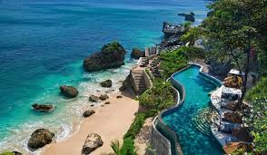
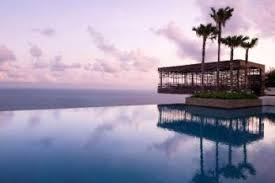

Dari pantai berpasir putih hingga pegunungan hijau, Bali memiliki berbagai pilihan hotel dan resort mewah yang menawarkan pengalaman tak terlupakan di jantung pariwisata Indonesia.

★★★★★ · Ubud, Gianyar
Dikelilingi oleh hutan tropis dan sungai yang menenangkan, resort ini menawarkan suasana romantis dan eksotis dengan arsitektur khas Bali. Cocok untuk bulan madu dan relaksasi.
Lihat destinasi
★★★★★ · Jimbaran, Badung
Resort bintang lima yang menghadap langsung ke Samudra Hindia. Nikmati Rock Bar yang ikonik, layanan spa terbaik, dan sunset yang memukau.
Lihat destinasi
★★★★★ · Uluwatu, Bali Selatan
Terletak di tebing tinggi dengan panorama laut lepas. Desain minimalis dan elegan berpadu sempurna dengan alam. Ideal untuk wisatawan yang mencari ketenangan dan kemewahan.
Lihat destinasiDari resort mewah hingga vila pribadi, setiap penginapan di Bali menawarkan keindahan dan ketenangan yang sulit dilupakan. Rencanakan liburan impianmu sekarang!
Lihat Semua dari Bali